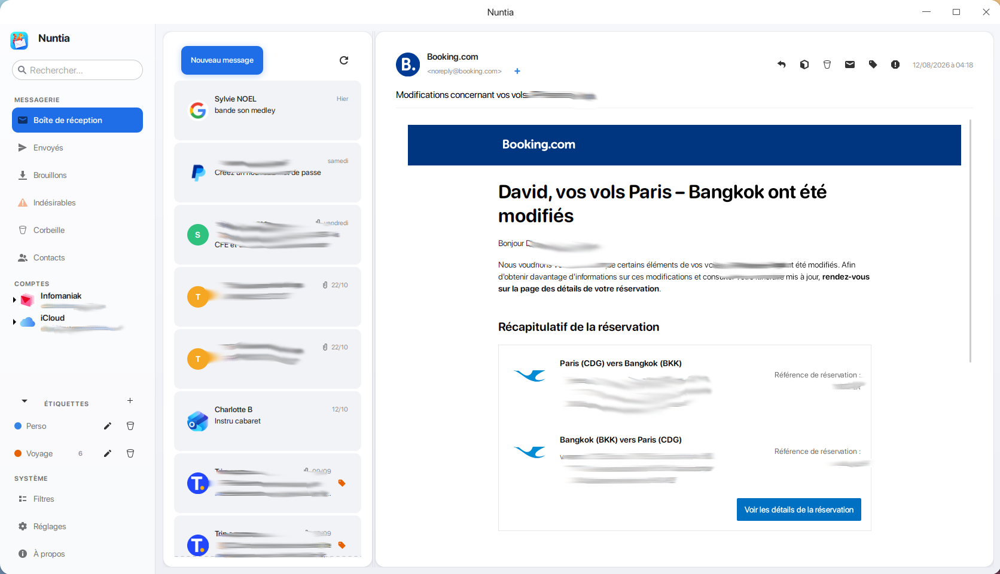

Nuntia
Nuntia est un client mail moderne, natif et élégant pour Deepin Linux. Multi-comptes IMAP/SMTP, filtres avancés, détection de phishing et interface en 8 langues.
- Multi-comptes et boîte de réception unifiée
- Filtres avancés et étiquettes
- Détection de phishing à 3 niveaux